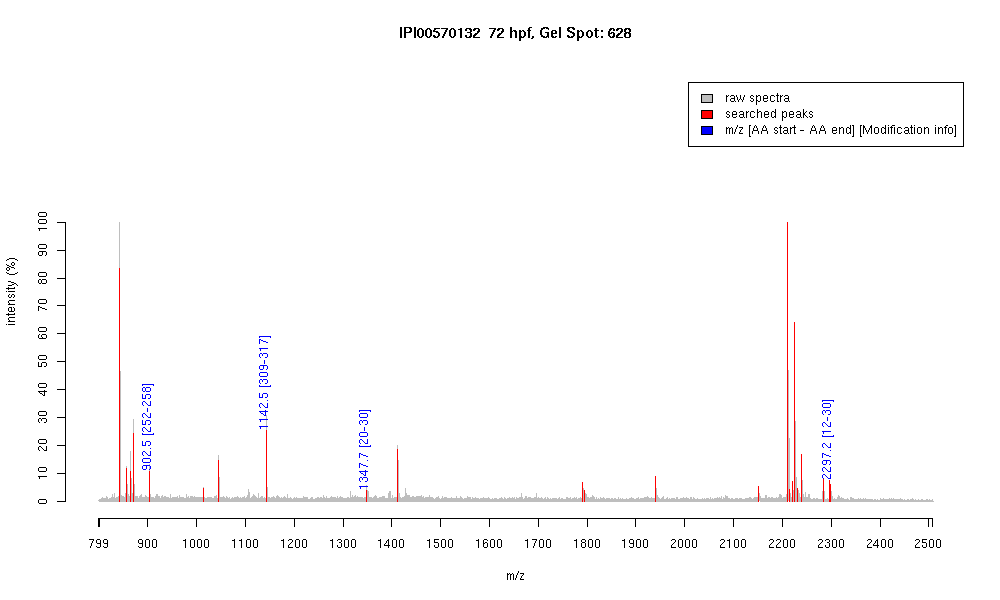

| Name | PREDICTED: similar to Serum amyloidP-component precursor (SAP) |
|---|---|
| MW | 38391.5 |
| PI | 5.66 |
| Mascot Protein Score | 84 |
| Masses (matched / unmatched) | 4 / 28 |

| Peptide | MZ (calc) | MZ (observed) | Error (DA) | Error (PPM) | Start | Stop | Modifications |
|---|---|---|---|---|---|---|---|
| SLHQVYR | 902.4842 | 902.4856 | 0.0014 | 2 | 252 | 258 | |
| AVYYNQDNR | 1142.5225 | 1142.5336 | 0.0111 | 10 | 309 | 317 | |
| TSEVDELNVWR | 1347.6539 | 1347.6693 | 0.0154 | 11 | 20 | 30 | |
| SVILFAYRTSEVDELNVWR | 2297.1924 | 2297.2095 | 0.0171 | 7 | 12 | 30 |